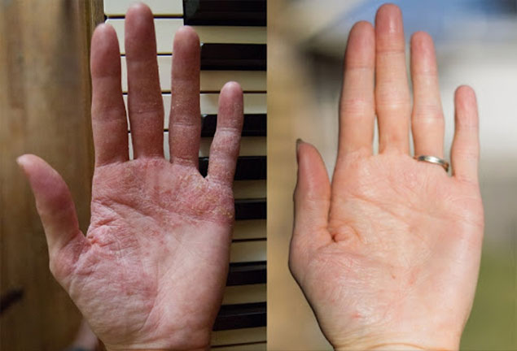

Autora: María González |
Autora: María González |
¡Hola!
Me gustaría compartir con ustedes, queridos amigos, cómo curé mi psoriasis y la de mi hija, y lo que realmente nos ayudó
 Mis piernas antes y después de curar la
psoriasis
Mis piernas antes y después de curar la
psoriasis
Llagas de caramelos
Todo comenzó a una edad temprana, cuando iba a la guardería. El enrojecimiento apareció en mis manos en forma de pequeñas escamas. Luego, en las rodillas y en los codos. Mi mamá pensó que las llagas eran de dulces y mandarinas, porque tal cantidad de dulces en mi infancia la comía solo en Navidades.
Se acabaron las vacaciones, pero no me sentí mejor: el enrojecimiento empezó a desprenderse y sangrar, ¡era muy doloroso! Al final me diagnosticaron psoriasis.
 La enfermedad se convirtió en mi sentencia
La enfermedad se convirtió en mi sentencia
Hasta la graduación, me untaron con varias cremas y geles recetados por los médicos, todos ellos a base de Betametasona con Glucocorticosteroide, es decir, hormonales. Y esto es muy peligroso, mata por completo el sistema inmunológico. ¿Y luego qué? Era necesario curar de alguna manera las heridas.
Mi mamá escuchaba los consejos de sus amigas y traía varias cremas preparadas por curanderos, me hacían remedios en los laboratorios de las farmacias locales, pero todos los esfuerzos se reducían a cero, la enfermedad regresaba una y otra vez
Matrimonio
Me casé en remisión, di a luz a un hijo. Cuando la enfermedad se reanudó, mi esposo, al ver esto, huyó de mí como de una leprosa. También acusó a su suegra de no haberle advertido sobre la enfermedad. Me divorcié y mi madre, mi hija y yo nos fuimos a vivir junto al mar. Pensé que el sol y el agua salada afectarían mi salud, pero nada ha cambiado. Regresamos a casa.
 El mar no me salvó de la psoriasis
El mar no me salvó de la psoriasis
Todo este tiempo, mi madre me apoyó y me ayudó con las tareas del hogar, lavaba la ropa por mí, cuando no teníamos lavadora. ¡Las manos se cubrían una y otra vez con una cáscara rosada y sangraban con una fuerza terrible! A menudo me las vendaba, por lo que mi madre estaba allí todo el tiempo y trataba de ayudarme.
Me hacía ensaladas porque todo me irritaba las manos: encurtidos, tomates, todos los productos que desprenden jugo. Por supuesto, ella realmente quería ayudarme a hacer mi vida más fácil.
Mis manos antes y después del tratamiento
Al borde de la depresión
Me acostumbré al hecho de que mi madre siempre estaba ahí, tratando heridas, vendando, haciendo todo por mí... Acababa de acostumbrarme a vivir con esta enfermedad. Pero cuando la psoriasis empezó a manifestarse en mi hija, me deprimí mucho.
Lo último que quería en el mundo era que ella pasara por todos esos círculos del infierno por los que tuve que pasar yo. Lo peor es que probamos todos los métodos, y ninguno de ellos fue lo suficientemente eficaz como para deshacernos de la psoriasis para siempre. Esto significaba que tampoco podía curar a mi hija.
Ver la enfermedad de mi hija fue insoportable...
Nueva esperanza
Sabiendo sobre mi problema, los compañeros de mi madre, que trabaja en el departamento de contabilidad, le dieron un disco con una grabación en video de la cura de la psoriasis. Cuando nos sentamos frente a la computadora y vimos síntomas similares a los míos en la pantalla, comencé a llorar. El famoso científico, doctor en Ciencias Médicas Arturo Herrero habló sobre cómo se puede curar la psoriasis.
Resulta que hay un medicamento que no contiene hormonas. Se llama . Los fabricantes afirman que tiene un efecto acumulativo. Según el profesor, el fármaco penetra en las capas inferiores de la epidermis y cura la piel desde el interior.
El uso de como curso ayuda a lograr una remisión casi de por vida. Solo tienes que intentar seguir las instrucciones.

Psoriasis derrotada
Pensé que sería muy difícil, pero mi madre se hizo cargo de mí y controló claramente cuándo y cómo usar el medicamento. La enfermedad comenzó a retroceder lentamente. Las escamas se convirtieron en manchas rosas y luego desaparecieron por completo. Apliqué la crema 5-6 veces al día, por horas.
Durante un curso del tratamiento, me deshice completamente de la enfermedad y curé a mi hija. Las palabras no pueden expresar lo preocupada que estaba de que mi niña tuviera que experimentar toda la pesadilla por la que yo pasé. Gracias a Dios, ahora estoy segura de que esto no sucederá.
¡Mi hija y yo logramos recuperarnos juntas!
Y mis hermosas y bien arregladas manos ahora están adornadas con un anillo (solía dudar en llevar joyas en los dedos). ¡Y mi amado hombre ni siquiera sabe que una vez tuve psoriasis!
¡Amo a todos! Gracias por recibir este video y esta crema a tiempo. ¡Usen este medicamento y estarán sanos y felices!